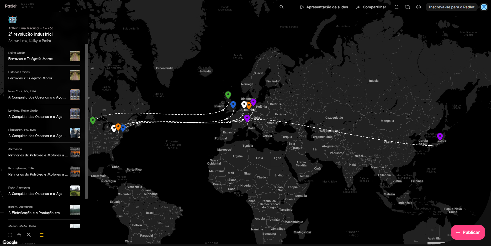
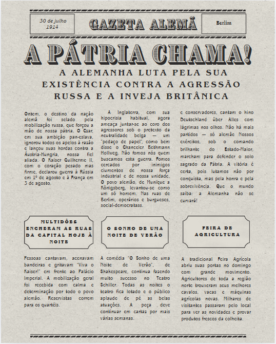
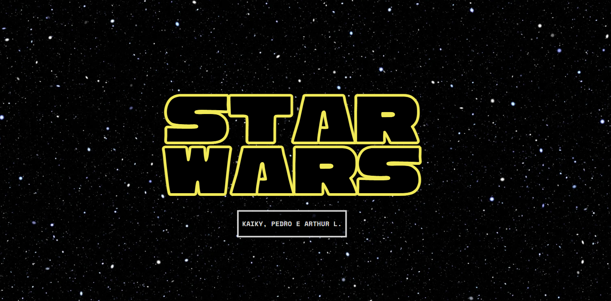
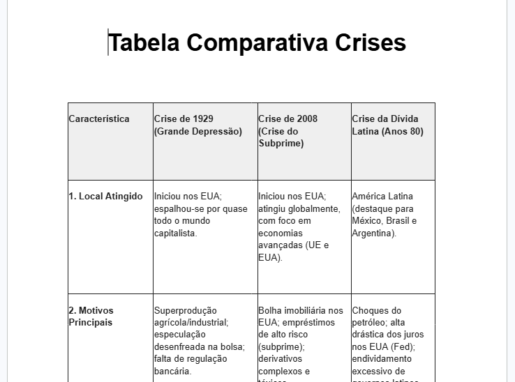

Mapa interativo com as tecnologias da segunda revolução industrial. Foi muito interessante perceber
como as tecnologias daquela época afetam as de hoje em dia
Habilidades: Não Listadas

Jornal baseado na segunda guerra mundial pelo ponto de vista da Alemanha. Perceber como a Alemanha se considerava
a "mocinha" da história é surpreendente
Habilidades: C3 - H15, H16, H20 - C6 - H39
Apresentação sobre os aspectos geopolíticos do Canadá. foi interessante comparar o canadá com outros países
e entender suas nuances
Habilidades: H1, H2, H3, H4 e H5

Apresentação comparando o totalitarismo no cinema com o totalitarismo da vida real, foi uma atividade interessante
que trabalhou bem os conteúdos vistos nas aulas expositivas
Habilidades: H10, H22 e H26
Apresentação sobre como o poder funcina na indústria na música e os impactos gerados por ele, foi uma atividade
esclarecedora que ajudou a compreender mais sobre o assunto
Habilidades: H30, H39 e H40

Tabela comparando as principais crises econômicas da história mundial. foi uma boa atividade que ajudou a compreender os aspectos
vistos em sala de aula.
Habilidades: Não Listadas